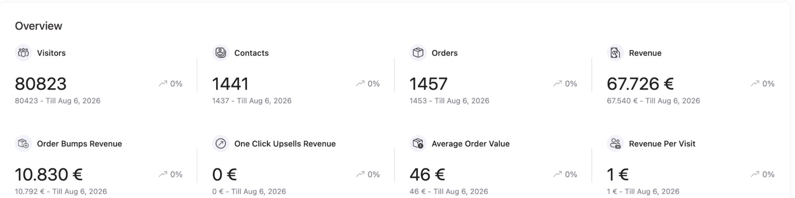

19:00Deo 1 · 20 min
Redosled koji prodaje
Zašto je tržište puno kurseva koje niko nije kupio i kojim redosledom ja pravim proizvode od 2020. Kratko i bez teorije koja ti ne treba, da bi znao zašto praktični deo ide baš ovako.
Prvi put javno: Modul 01 programa InfoCash Akcelerator
Za 90 minuta zajedno biramo temu i uživo, uz AI, proveravamo da li za nju postoje kupci. Ovo nije prezentacija koju gledaš. Ovo je radionica u kojoj radiš, po istom redosledu po kom sam od 2020. prodao preko 50.000 digitalnih proizvoda.
Rezerviši besplatno mestoVodi Vladimir StankovićOsnivač AI Profit Lab-a i autor podkasta Biznis priče
Besplatno. Zoom link ti stiže na email.
Ograničeno na 200 mestaBez spama. Podatke koristim samo za Zoom link i podsetnik.
Radionica počinje za
Gde većina zapne
Ljudi te godinama pitaju za savet, besplatno. A ti to nikad nisi spakovao u nešto što se plaća.
Svaka ti zvuči dobro tri dana, pa je zameni sledeća. Nijedna nije stigla do prve prodaje.
Pa i ne kreneš. Niko ne želi da potroši tri meseca na proizvod koji niko neće platiti.
Problem nije znanje. Nije ni publika. Problem je što se preskače prvi korak: odluka o niši, zasnovana na dokazu da ljudi plaćaju. Na ovoj radionici taj korak radimo zajedno.
Plan radionice
Zašto je tržište puno kurseva koje niko nije kupio i kojim redosledom ja pravim proizvode od 2020. Kratko i bez teorije koja ti ne treba, da bi znao zašto praktični deo ide baš ovako.
Prvi modul InfoCash Akceleratora, onaj na kom većina zapne, prolazimo zajedno. Ti radiš na svom primeru, ja radim pred svima na primerima iz chata.
Odgovaraš u toku radionice. Na kraju vežbe imaš 3 do 5 tema iz sopstvenog znanja i iskustva, a ne sa tuđe liste ideja.
Svaku temu provlačimo kroz četiri pitanja. Da li problem boli? Da li ljudi za njega već plaćaju? Znaš li gde su ti ljudi? Možeš li ti to da isporučiš? Ostaje jedna, najviše dve.
Uzimam teme učesnika iz chata i pred svima ih proveravam: šta ljudi pitaju, gde se okupljaju, ko već prodaje i po kojoj ceni. Vidiš tačno koje promptove kucam i šta iz odgovora odbacujem.
Zatvaramo vežbu jednom nišom i opisom osobe kojoj prodaješ. Od te tačke kreće svaki proizvod koji se prodaje.
Odgovaram na pitanja uživo. Na kraju predstavljam InfoCash Akcelerator i specijalnu ponudu koja važi samo za one koji su na Zoom-u.
Odakle dolazi radionica
InfoCash Akcelerator je moj mentorski program od šest modula, od ideje do prvih 10 kupaca. Svaki modul rešava jednu kočnicu. Prvi rešava najveću: nemam ideju, ili ih imam previše.
Samo uživo
Snimka neće biti. Sve što se dešava na radionici, dešava se samo uživo, 16. novembra u 19h.
Brojke iz panela
Ne prodaje se preko mojih kanala. 90% kupaca dolazi preko Facebook reklama, od ljudi koji za mene nikad nisu čuli. I proizvod i funnel su sklopljeni za nekoliko dana, po istom redosledu koji počinjemo na radionici.

Ko vodi radionicu
Zovem se Vladimir Stanković. Moj prvi kurs, „Sve tajne Instagram marketinga", doneo je 10.000 € za prvi mesec, sa svega nekoliko hiljada pratilaca. Ne zato što je publika bila velika, nego zato što su ponuda i ljudi kojima je bila namenjena bili pravi.
Od tada sam prodao preko 50.000 digitalnih proizvoda u šest oblasti, sve na srpskom: kurseve, priručnike, membership zajednice, konferencije. Neke stvari su propale i koštale me mesece. Neke su uradile milione. Iz toga je nastao InfoCash metod.
Pošteno
Pitanja
Da. Nema kartice i nema skrivenih troškova. Prijaviš se, a Zoom link ti stiže na email pred radionicu.
Upravo za tebe je pravljena. Prva vežba kreće od nule, od tvog znanja i iskustva, i na kraju imaš nekoliko tema. Ne moraš da dođeš sa idejom, nego da izađeš sa njom.
Jeste. Proizvod koji stoji najčešće ima problem u niši, a ne u sadržaju. Test niše sa četiri filtera ti pokazuje gde je pukotina.
Ne. Uvod je kratko ponavljanje redosleda, a ceo praktični deo je nov. Na prvom vebinaru sam pokazao šta treba da se uradi. Ovde to radimo zajedno, uživo.
Ne. Radionica je samo uživo, 16. novembra u 19h. Bonusi i specijalna ponuda važe samo za prisutne, zato ubaci termin u kalendar odmah posle prijave.
Možeš. Za vežbe je lakše sa laptopa, jer ti u drugom prozoru stoji otvoren AI alat.
Oko 90 minuta. Uvod, praktični deo od 45 minuta i live pitanja na kraju.
Zoom sala prima 200 ljudi i prijave se zatvaraju kad se popuni. Ko se ranije prijavi, ima mesto.
Ponedeljak, 16. novembar u 19:00
Uživo na Zoom-u. 200 mesta. Bez snimka. Jedna prijava te deli od niše za tvoj prvi digitalni proizvod.
Rezerviši besplatno mesto